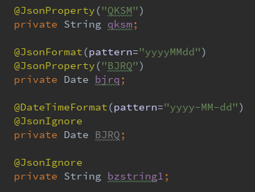
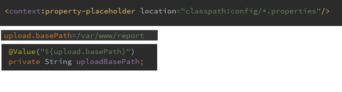

本次项目采用Springboot+Mybatis方式，使用注解式配置，增加全局异常处理，实现前端和后台参数传递过程下划线和驼峰法的自动转换。MyBatis官方没有提供基于Gradle的MyBtis Generator插件，因此沿用Maven做Build工具。
配置
application.yml关键配置
MyBatis配置如下：
1 | mybatis: |
map-underscore-to-camel-case: true在生产代码时将数据库中下划线命名自动转为驼峰法命名代码。
Jackson配置如下：
1 | jackson: |
property-naming-strategy: SNAKE_CASE用于前端以application/json方式提交的POST请求的流参数转换，实现前端和后台双向自动下划线和驼峰法命名，后端接受参数的对象需要用@RequestBody修饰。defaultPropertyInclusion: NON_EMPTY用于@ResponseBody修饰的接口在将对象转为json返回参数时，如果对象属性为null，则在json中忽略该属性。
注解配置
- 使用
@Configuration修饰配置的类。 - 使用
@Bean修饰的方法相当于xml配置中的bean标签，对应方法名为xml配置中的id属性，也可在用@Bean(name = "heou.net")的形式指定id。 - Spring的三种装配方式分别是:基于
@Component和@Autowired的隐式装配、基于@Configuration的Java显示装配和基于xml配置的显式装配。 - 在xml配置中，可通过构造器注入、setter注入的方式装配Bean。
- 在运行函数的类的配置如下：
1 | (scanBasePackages = "com.*.*") |
@SpringBootApplication 包括@Configuration、@EnableAutoConfiguration和@ComponentScan三个注解。
排除tomcat使用undertow
Maven:
1 | <dependency> |
Gradle:
1 | configurations { |
logback日志
1 | logging: |
可指定类的日志输出级别。
MyBatis
MyBatis分页
内存分页
使用RowBounds
1 | loggerMapper.getLogsBySortASC(new RowBounds(0,10)); |
Mybatis拦截器
待实现
第三方组件
通用mapper
通过泛型实现所有的mapper的CRUD操作，减少代码量。待实现，目前有通用Mapper4
MyBatis Generator
POM配置
1 | <plugin> |
generatorConfig配置
1 | <context id="context" targetRuntime="MyBatis3"> |
targetRuntime=”MyBatis3”生产的代码包括selectByExample，delimitIdentifiers=”true”确保表名加引号，即使使用关键字（例如user）也可以正常查询。
常用功能
全局异常处理
1 |
|
若业务代码中无异常处理，可捕获controller和service中的异常。
统一返回消息格式
1.定义错误代码与错误消息
1 | public enum ResultType { |
2.定义返回格式
1 | public class Result<T> { |
3.定义BaseController。
工具类使用
Google Guava
apache-commons-collections
apache-commons-fileupload
高级用法
数据库读写分离
redis二级缓存
统一前后端地址
使用反向代理
处理枚举
前后端字段下划线和驼峰法自动切换
指定property-naming-strategy: SNAKE_CASE
可实现后台到前端时的lowwer_camel转under_score但是，前端到后台时，后台接受参数的对象前加@RequestBody后，以Content-Type: application/json方式发POST请求时可以实现under_score转lowwer_camel
以application/x-www-form-urlencoded发POST请求时可以实现和Get请求均不能实现。
1.通过get请求或者application/x-www-form-urlencoded提交的POST请求
此情况下，参数可通过httpserveletRequest.getParams()获取
定义argumentreslover,如下：
1 | class UnderScore2CamelArgumentResolver implements HandlerMethodArgumentResolver{ |
2.通过application/json提交的POST请求
此情况下，参数可通过httpserveletRequest.getInputStream()获取参数json流。
参考本文的Jackson配置
问题
Generator的xml文件如何读取application.yml内的内容
未解
yml中的日志名称改为项目名称
未解
Invalid bound statement (not found)
异常的全称如下：
org.apache.ibatis.binding.BindingException: Invalid bound statement (not found):
网上大多提到的是xml的mapper无法扫描到，要在启动类配置@MapperScan(“com.*“)，但本项目一开始犯了各低级的错误，application.xml的datasource.url配置成了jdbc:postgres://***，应该是jdbc:postgresql://***
注解
格式化
- @DateTimeFormat(pattern=”yyyy-MM-dd”)是将String转换成Date，一般前台给后台传值时用
- @JsonFormat(pattern=”yyyy-MM-dd”) 将Date转换成String 一般后台传值给前台时
- @JsonDeserialize(using = CustomJsonDateDeserializer.class)
- @JsonSerialize(using= DateJsonSerializer.class)

配置属性
